Headphones, earphones are one of the most important devices in today's life as a person with some
job, a student, and a gamer specially.. so we are here for you to suggest thr best quality headphones from ₹
199 - ₹ 71,000,but we are sure that every product we suggest will work badass. And ya we are not affiliated
with any e commerce site.
Here we will offer some of the best headphones for gamers, we will take it from very expensive to just okay
for a gaming headphone but we have it for every single gamer.Choosr your best which suits you the best..
Here we will offer some of the best headphones for gamers, we will take it from very expensive to just
okay
for a gaming headphone but we have it for every single gamer.Choosr your best which suits you the best..
#1 : Razer Blackshark V2 Pro | price : ₹ 17,499
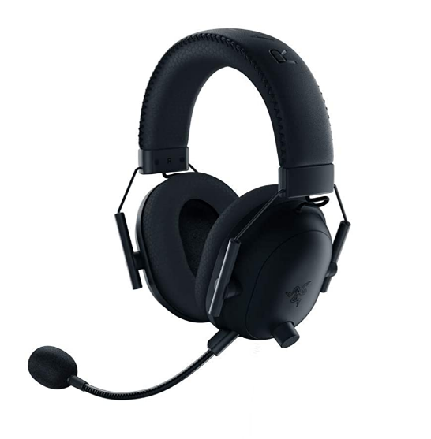
About this earphone :
Comes with a 50mm titanium driver
RAZER hyper clear cardiod Mic with a usb card for sound.
Comfortable : comes with foam fluffy cushions. So, your ears won't be harmed during the play time.
Compatable for all devices like : A laptop, PC, Nintendo switch, PS4, PS5, Xbox but a 3.5mm port is
required for mobile phones.
Reviews :
Every gamer who bought this did not regret, trust us, it was the best headphone they ever got
(Most
of them said)
Ratings : 5.00/5.00
#2 : LOGITECH G 733 | price : ₹ 11,995
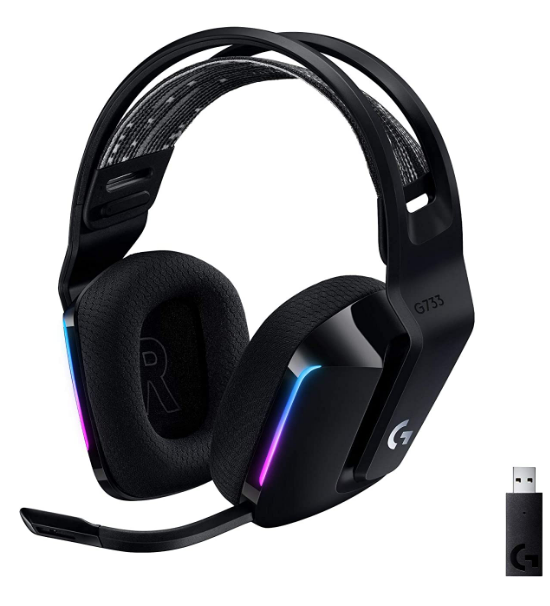
About this earphone :
Really! no gamer on the planet would be disagreeing to get this superb looking headphones.
It has the capacity of about 29 hours of continued usage.
Comes with a colourfull reversible suspension headband specially designed for long lasting gameplay
with
no harm.
Advanced voice filter technology to make your voice more richer and clear to the other person.
Reviews :
Extremely powerfull no regret for buying...
Ratings : 5.00/5.00
#3 : Hyperx cloud stinger | price : ₹ 6,459
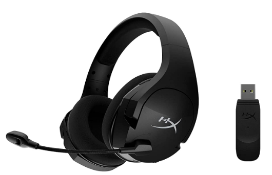
About this earphone :
Totally made for high quality gaming.
A very clear voice gets enabled due to the superb mic quality.
Noise cancelling headphone, totally worthy for a gamer.
Comes with durable and adjustable steel sliders.
Reviews :
99.6% of the gamers were totally happy with this product. Overall a 10/10.
this was awsome.
Ratings : 5.00/5.00
#4 : EKSA E900 Pro wired | price : ₹ 3,699
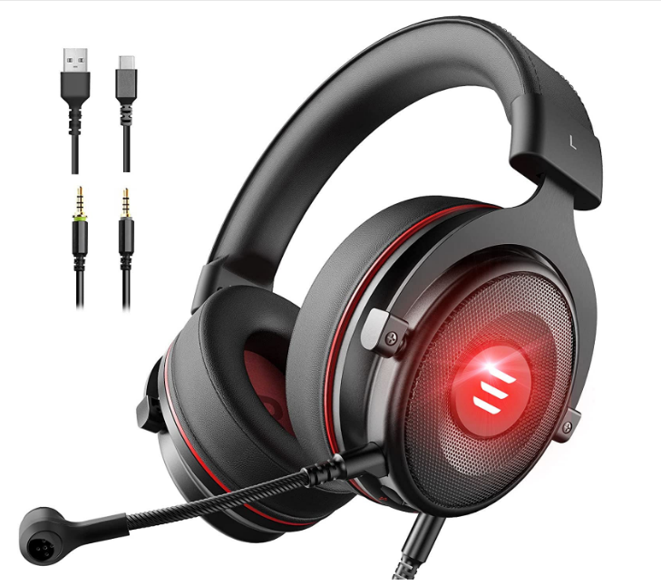
About this earphone :
Virtusl 7.1 surround sound 50 mm audio driver with powerfull bass stereo surround sound.
A very great humanised design for full day comfort with soft memory protien earmuffs, wear
them
for a very long time they won't even just effect your ear a single bit .
Noise cancelling headphone, and really it prevents from letting the voice go out from and and
vice-versa.
Very Compatable with each and every device you use.
Reviews :
99% of the gamers were totally happy with this product.
Ratings : 4.98/5.00
#5 : EKSA E800 Wired | price : ₹ 2,499
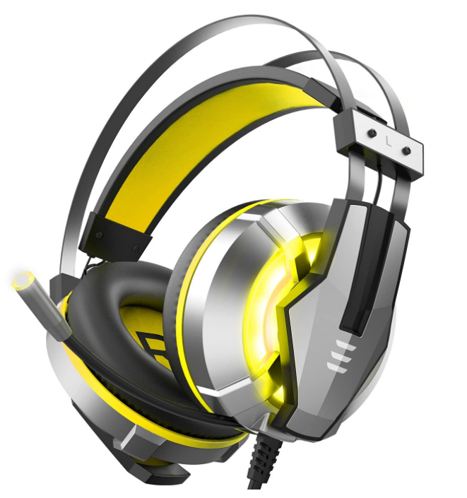
About this earphone :
Dosen't it look so stylish, it will for sure give a badass effect to your gaming by it's looks and
its
working.
Let's say you are about to win in call of duty / PUBG / Free fire but one more player is
remaining in
battle royale you just wear these hear the footsteps of the coming person with these excellent 50mm
drivers and boom a Headshot : "Winner" "Booyah".
Noise cancelling headphone and comes with a mute button.
Compatable for all devices like : A laptop, PC, Nintendo switch, PS4, PS5, Xbox but a 3.5mm port is
required for mobile phones.
Reviews :
99% of the gamers were totally happy with this but some of them did not like the colour.
Overall
this was awsome.
Ratings : 4.97/5.00
#6 : EKSA E3000 Wired | price : ₹ 2,499
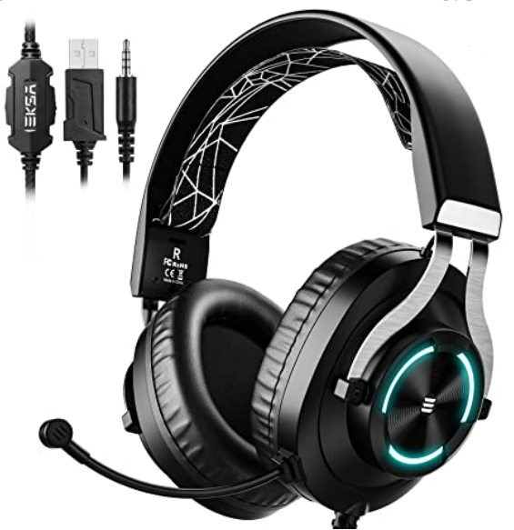
About this earphone :
Extreme 50mm drivers : these wired gaming headphones are specially built for high-quality
gaming and a
wonderfull experience of the realty gaming feature like dolby atoms.
The mic has the tendancy to rotate 360 degree for your clear comfort.
Multi platform Compatability : this headphone can work on any device you want to play on.
Just say "Goodbye" to intircate control type adjustment.
Reviews :
98.9% of the gamers will adviced this product to give high ratings, its your choice.
Ratings : 4.94/5.00
#6 : Redgear Cosmo 7 Wired | price : ₹ 1,799
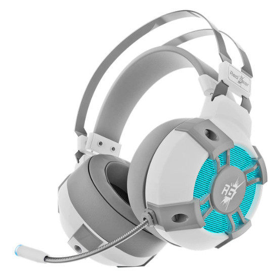
About this earphone :
truly Virtusl 7.1 surround sound precisely located audio comes with an inline remote.
It has luxurious noise cancelling ear foam and totally adjustable goes well with connected
microphone.
Super noise cancellation technology.
It has a very attractive and RGB light on the earcups as well as on the tip of microphone.
Reviews :
98.7% of the gamers was just over this product to give it 10/10 as its performance .
Ratings : 4.92/5.00
#7 : Kotion each Wiredover ear | price : ₹ 1,059
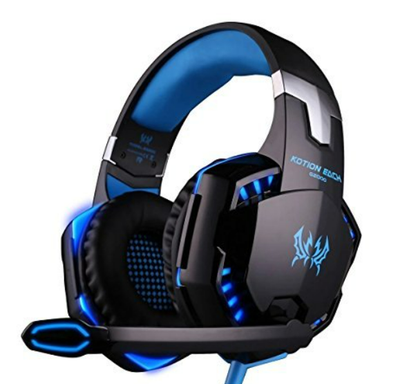
About this earphone :
Dosen't it look so stylish, it will for sure give a badass effect to your gaming by it's looks and
its
working.
Let's say you are about to win in call of duty / PUBG / Free fire but one more player is
remaining in
battle royale you just wear these hear the footsteps of the coming person with these excellent 50mm
drivers and boom a Headshot : "Winner" "Booyah".
Noise cancelling headphone and comes with a mute button.
Compatable for all devices like : A laptop, PC, Nintendo switch, PS4, PS5, Xbox but a 3.5mm port is
required for mobile phones.
Reviews :
99% of the gamers were totally happy with this but some of them did not like the colour.
Overall
this was awsome.
Ratings : 4.90/5.00
#8 : MFTEK gaming headphone | price : ₹ 1,499
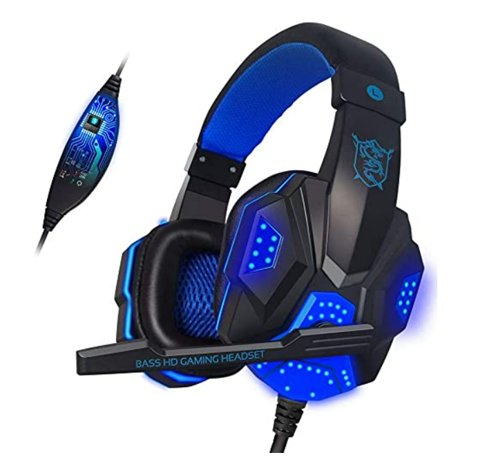
About this earphone :
Leather headset cover provides a very comfortable and adjustable drive all through the day.
The 40mm speaker provides a rich sound quality and mic thus, makes your voice more richer.
Adjustable 360 degree rotating microphone.
3.5 mm + USB PLUG combination volume controller 2 in 1 connector free.
Reviews :
99% of the gamers were totally satisfied with this product.
Ratings : 4.88/5.00
#9 : Redgear Cosmo 7 | price : ₹ 1,548
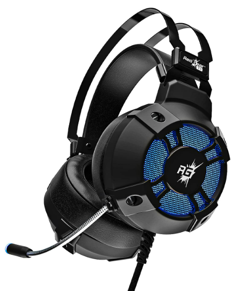
About this earphone :
7.1 emmense surround sound quality for hi-fi gamers truly built for them. Inline remote : Yes.
Awsome noise cancelling feature with foam ear pads and adjustable split headband which
reduces
pressure and gives you a lot of comfortability.
Noise cancelling headphone, even nobody can hear if anyone is talking with you, no other person will
be
able to hear the other person's voice.
Comes with durable and adjustable steel sliders.
Reviews :
96% of the gamers were totally agreed that this headphone has an underrated price.
very comfortable and very durable headphone, even thought written "for kids" but teen too
can
wear these for gaming.
Multi platform Compatability : this headphone can work on any device you want to play on.
18 months warranty after the date of purchase.
Reviews :
95% of teens 96% of the parents liked this product.
Ratings : 4.40/5.00
#11 : Cosmic Byte over the ear | price : ₹ 739
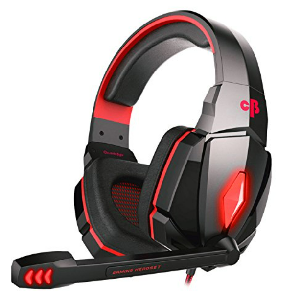
About this earphone :
This is perfect for playing games and listening to music.
Soft cushion of the earmuff provides comfortability fo gaming for long time.
Inline smart remote control connected with mic.
Best thing about this product is that it has all the features even with such a low cost.
Reviews :
91% of the gamers will adviced this product to give high ratings, its your choice.
Ratings : 4.20/5.00
#12 : Cosmic Byte GS410 | price : ₹ 625
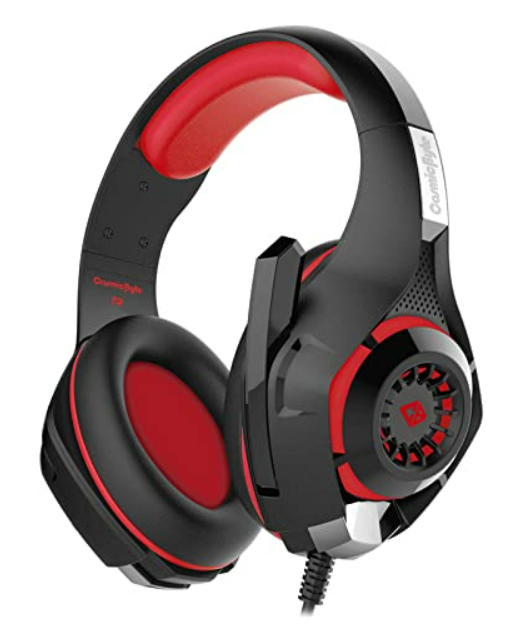
About this earphone :
Primary headphone, very adjustable and comfortable to use .
With even such a low cost, these headphones are there for superb functioning for those who
are
beginners.
Delivers a very nice quality of sound, inline controller and mute button.
3.5 jack for sound and mic.
Reviews :
96% of the gamers will adviced this product to give high ratings, its your choice.
Ratings : 4.44/5.00
Note : These are cheap, but we will not be providing you low quality ones but high quality earphones
which
will suit you the best.
#1 : KRATOS wired earphones | price : ₹ 219
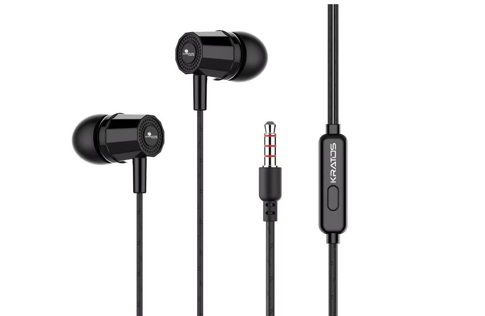
About this earphone :
Very thin wire and even mouldable, (mouldable because many of the earphones get damaged because
of
folding and the wires get broken
but this does not.
Superb clarity, not just our words but the customer's words, when they just buyed it
from here
we just
asked them about their experience and they were like its badass with price and so with the
quality.
Supports all devices like :- laptop, Tablet, smartphones, Mp3 players
6 months brand warranty, which clearly shows a total worth to buy.
Reviews :
89% of our customers appreciated the product, 11% said it is not compatable for their
meeting and
gaming
because they need to bring the mic near to their mouth to speak which gets difficult for them to
consentrate on a task, overall they said it has a good sound quality and worth buying.
Ratings : 4.89/5.00
#2 : JBL C50HI (Wired earphones) | price : ₹ 499
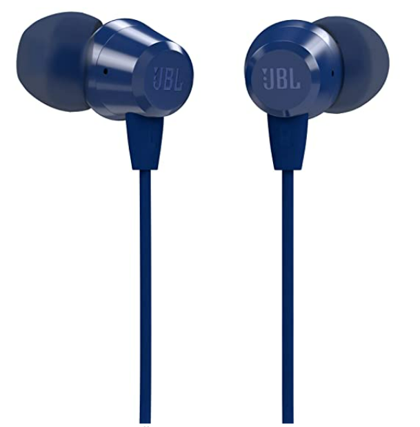
About this earphone :
Very comfortable to wear and lightweight.
Many function on your device with just a single click on your button of your earphones
Supports all devices like :- laptop, Tablet, smartphones, Mp3 players
6 months brand warranty, which clearly shows a total worth to buy.
Adjustable to every ear type and are not slippery due to the rubber tubes.
Reviews :
82% of our customers rated it as an excellent product with this cost but rest 18% had an
issue of
unclear voice from the mic and some surrouding disturbances. Overall the product was said to be an
easy and
comfortable piece with this cost
Ratings : 4.40/5.00
#3 : boAt bassheads | price : ₹ 379
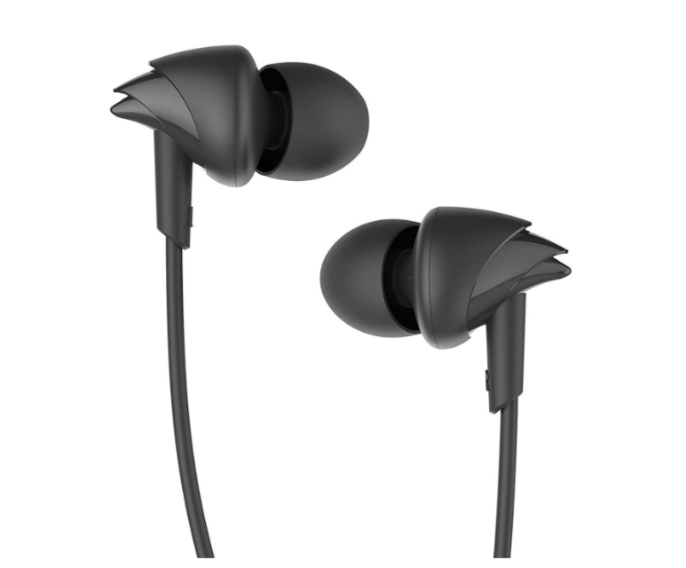
About this earphone :
Very stylish first of all fot the people who wanna buy the things different and better from the
normal,
hit different, this is a product.
Frequency responds are from 20Hz - 20KHz
Supports all devices like :- laptop, Tablet, smartphones, Mp3 players
It comes with 1.2 metre long wires so that you can plug it anywhere.
Adjustable to every ear type and are not slippery due to the rubber tubes.
Comfirtable is constant even if you listen to music for long-lasting hours.
Reviews :
In here 80% liked the product but 20% was just complaning for damaged wires because of
extensive
moulding(By the way we don't think that its a big issue when people keep it spinning around their
fingers
the wires does not break).Overall this product is 10/10 for teens. And even its affordable just with
thair
pocket money.
Ratings : 4.36/5.00
#4 : Zebronics Zeb-buds 30 | price : ₹ 199
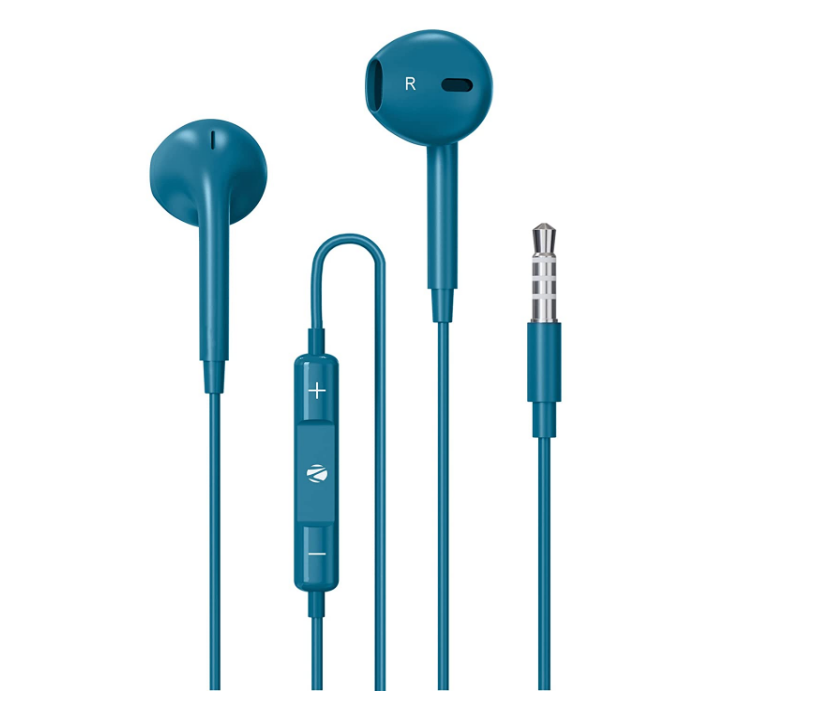
About this earphone :
Best part : detailed threbles and thumping bass and even a very low pitch sound is clearly
audible from
this earphone.
Compatable with all device.
pick up calls, pause a video deny the call with just a click and a hold on that button.
high-quality mic provides better interaction.
Reviews :
79% of our customers appreciated the product, 21% were those who were not able to even wear
these
properly as it was slipping from their ear again and again. So first get cleared that this fits into
your
ear properly. Overall, it does what it says best match for meetings.
Ratings : 4.02/5.00
#5 : boAt bassheads 152| price : ₹ 399
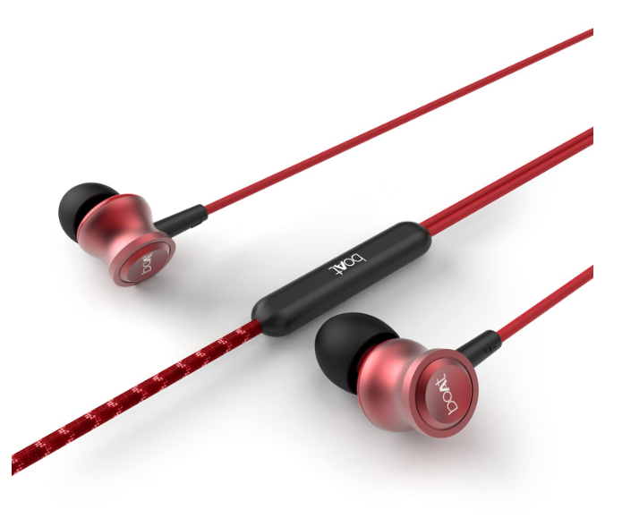
About this earphone :
HD and crystal clear sound effencts really worth to buy
Compatable for all devices like :- laptop, Tablet, smartphones, Mp3 players
1 year warranty after you buy the product.
Reviews :
87% like this product, but people are just not finding it worthy to pay a higer amount for
the same
product as their boAt bassheads 100 was completely similar in working and quality. Overall the
customers
said that the product had a good color finish and stylish look.
Ratings : 3.98/5.00
#6 : pTron pride lite | price : ₹ 219
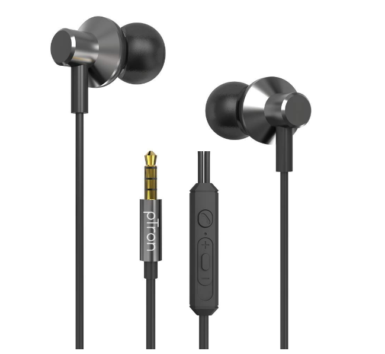
About this earphone :
Stylish metallic look, and an admirable quality of sound.
Very lightweight and comfortable.
Reviews :
72% of the total customers liked this even the price is very low as compared to its
functioning.But
it gets damaged when its folded outside voice might be audible to you.
Ratings : 3.50/5.00
Headphones :
There are some of the headphones in this range which might make you a bit excited.
#1 : Zebronics bluestooth headphones with Mic : ₹ 599
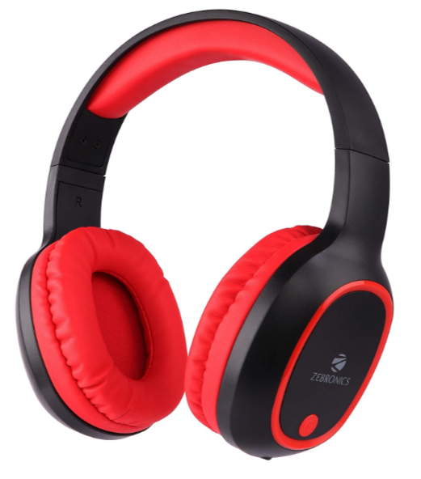
About this earphone :
Very comfortable design so the user won't have any problems to wear, comes with a lomg hour
working
ability.
Purely adjustable, accoding to your comfort, while on work and listening music.
Supports all devices like :- laptop, Tablet, smartphones, Mp3 players
Unbelieveable, but this headphone has a 12hour talk time
Reviews :
70% liked this product but the only problem was the mic for the rest of 30% but you should
also
understand that in ₹ 599 you are atleast getting a good quality headphone.
Ratings : 4.11/5.00
#2 : Bolt audio bass buds wired | ₹ 599
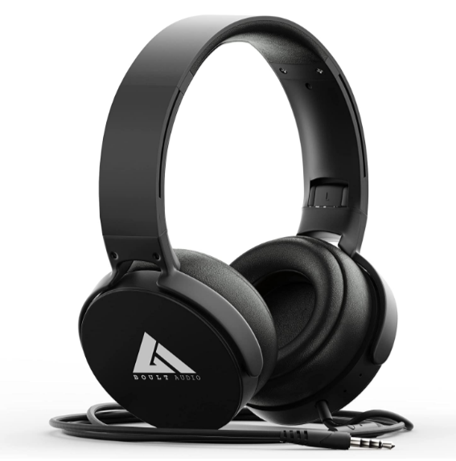
About this earphone :
An engaging rich signature sound quality make this one of the best piece it has a vey nice sound
quality.
Extra bass : Extra punchy deep bass with clear sparky highs.
Inbuilt mic to communicate and HD calls and even can operate Siri/Google assistant.
You can answer a call, reject a call, hold a call with inline controls.
Reviews :
70% liked this product but the only problem was the mic for the rest of 30% but you should
also
understand that in ₹ 599 you are atleast getting a good quality headphone.
Ratings : 4.11/5.00
#3 : pTron studio bluetooth headphones | ₹ 499
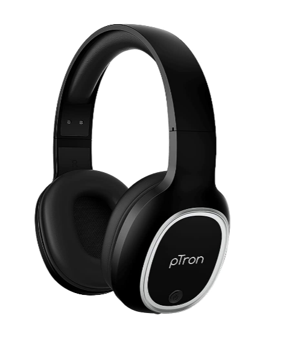
About this earphone :
Its a super tough headphone for some conditions in which headphones might break and anything bad
happens
to them, but this headphone dosen't even have a single effect pf that as it is lab tested.
This comes with 6 months brand warranty.
40mm speakers with superior output.As they are bluetooth connected 10 metres is the average
range of
these headphones
A very comfortable and durable headphone in very small amount asked.
Reviews :
68% liked this product, but it does not catch the Wi-fi too soon by the way the sound
quality is
decent and can be said as a noce on accoding to its price.
Ratings : 4.01/5.00
#4 : pTron soundster arcade Wired | ₹ 499
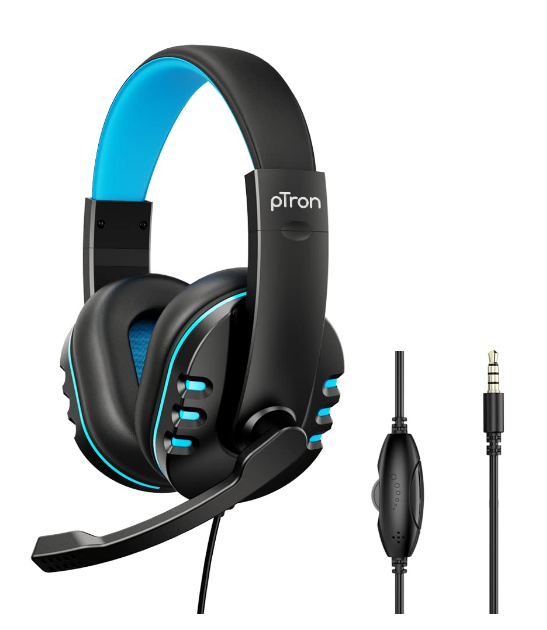
About this earphone :
Wired headphones withceasy access to the volume and the functioning of your device.
Adjustable boom mic and ya comes with a very attractive and stylish design.
Just plug and play no installation needed.
A very comfortable and durable headphone in very small amount asked.
Reviews :
68% liked this product, but rest 38% did not had any explanation but just ok with this.
Ratings : 3.98/5.00
Here we will offer some of the best headphones for gamers, we will take it from very expensive
to just okay
for a gaming headphone but we have it for every single gamer.Choosr your best which suits you
the best..
#1 : Razer Blackshark V2 Pro | price : ₹ 17,499
About this earphone :
Comes with a 50mm titanium driver
RAZER hyper clear cardiod Mic with a usb card for sound.
Comfortable : comes with foam fluffy cushions. So, your ears won't be harmed during the play
time.
Compatable for all devices like : A laptop, PC, Nintendo switch, PS4, PS5, Xbox but a 3.5mm
port is
required for mobile phones.
Reviews :
Every gamer who bought this did not regret, trust us, it was the best headphone they
ever got (Most
of them said)
Ratings : 5.00/5.00
#2 : LOGITECH G 733 | price : ₹ 11,995
About this earphone :
Really! no gamer on the planet would be disagreeing to get this superb looking headphones.
It has the capacity of about 29 hours of continued usage.
Comes with a colourfull reversible suspension headband specially designed for long lasting
gameplay with
no harm.
Advanced voice filter technology to make your voice more richer and clear to the other
person.
Reviews :
Extremely powerfull no regret for buying...
Ratings : 5.00/5.00
#3 : Hyperx cloud stinger | price : ₹ 6,459
About this earphone :
Totally made for high quality gaming.
A very clear voice gets enabled due to the superb mic quality.
Noise cancelling headphone, totally worthy for a gamer.
Comes with durable and adjustable steel sliders.
Reviews :
99.6% of the gamers were totally happy with this product. Overall a 10/10.
this was awsome.
Ratings : 5.00/5.00
#4 : EKSA E900 Pro wired | price : ₹ 3,699
About this earphone :
Virtusl 7.1 surround sound 50 mm audio driver with powerfull bass stereo surround sound.
A very great humanised design for full day comfort with soft memory protien
earmuffs, wear them
for a very long time they won't even just effect your ear a single bit .
Noise cancelling headphone, and really it prevents from letting the voice go out from and
and
vice-versa.
Very Compatable with each and every device you use.
Reviews :
99% of the gamers were totally happy with this product.
Ratings : 4.98/5.00
#5 : EKSA E800 Wired | price : ₹ 2,499
About this earphone :
Dosen't it look so stylish, it will for sure give a badass effect to your gaming by it's
looks and its
working.
Let's say you are about to win in call of duty / PUBG / Free fire but one more
player is
remaining in
battle royale you just wear these hear the footsteps of the coming person with these
excellent 50mm
drivers and boom a Headshot : "Winner" "Booyah".
Noise cancelling headphone and comes with a mute button.
Compatable for all devices like : A laptop, PC, Nintendo switch, PS4, PS5, Xbox but a 3.5mm
port is
required for mobile phones.
Reviews :
99% of the gamers were totally happy with this but some of them did not like the
colour. Overall
this was awsome.
Ratings : 4.97/5.00
#6 : EKSA E3000 Wired | price : ₹ 2,499
About this earphone :
Extreme 50mm drivers : these wired gaming headphones are specially built for
high-quality
gaming and a
wonderfull experience of the realty gaming feature like dolby atoms.
The mic has the tendancy to rotate 360 degree for your clear comfort.
Multi platform Compatability : this headphone can work on any device you want to play on.
Just say "Goodbye" to intircate control type adjustment.
Reviews :
98.9% of the gamers will adviced this product to give high ratings, its your choice.
Ratings : 4.94/5.00
#6 : Redgear Cosmo 7 Wired | price : ₹ 1,799
About this earphone :
truly Virtusl 7.1 surround sound precisely located audio comes with an inline
remote.
It has luxurious noise cancelling ear foam and totally adjustable goes well with
connected
microphone.
Super noise cancellation technology.
It has a very attractive and RGB light on the earcups as well as on the tip of microphone.
Reviews :
98.7% of the gamers was just over this product to give it 10/10 as its performance .
Ratings : 4.92/5.00
#7 : Kotion each Wiredover ear | price : ₹ 1,059
About this earphone :
Dosen't it look so stylish, it will for sure give a badass effect to your gaming by it's
looks and its
working.
Let's say you are about to win in call of duty / PUBG / Free fire but one more
player is
remaining in
battle royale you just wear these hear the footsteps of the coming person with these
excellent 50mm
drivers and boom a Headshot : "Winner" "Booyah".
Noise cancelling headphone and comes with a mute button.
Compatable for all devices like : A laptop, PC, Nintendo switch, PS4, PS5, Xbox but a 3.5mm
port is
required for mobile phones.
Reviews :
99% of the gamers were totally happy with this but some of them did not like the
colour. Overall
this was awsome.
Ratings : 4.90/5.00
#8 : MFTEK gaming headphone | price : ₹ 1,499
About this earphone :
Leather headset cover provides a very comfortable and adjustable drive all through the day.
The 40mm speaker provides a rich sound quality and mic thus, makes your voice more
richer.
Adjustable 360 degree rotating microphone.
3.5 mm + USB PLUG combination volume controller 2 in 1 connector free.
Reviews :
99% of the gamers were totally satisfied with this product.
Ratings : 4.88/5.00
#9 : Redgear Cosmo 7 | price : ₹ 1,548
About this earphone :
7.1 emmense surround sound quality for hi-fi gamers truly built for them. Inline remote :
Yes.
Awsome noise cancelling feature with foam ear pads and adjustable split headband
which reduces
pressure and gives you a lot of comfortability.
Noise cancelling headphone, even nobody can hear if anyone is talking with you, no other
person will be
able to hear the other person's voice.
Comes with durable and adjustable steel sliders.
Reviews :
96% of the gamers were totally agreed that this headphone has an underrated price.